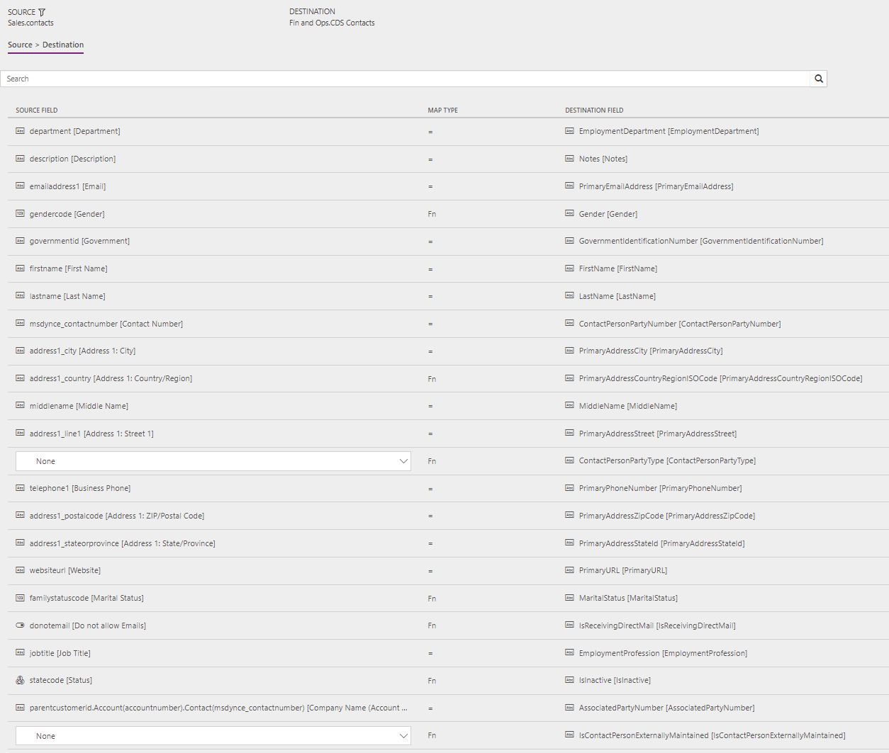
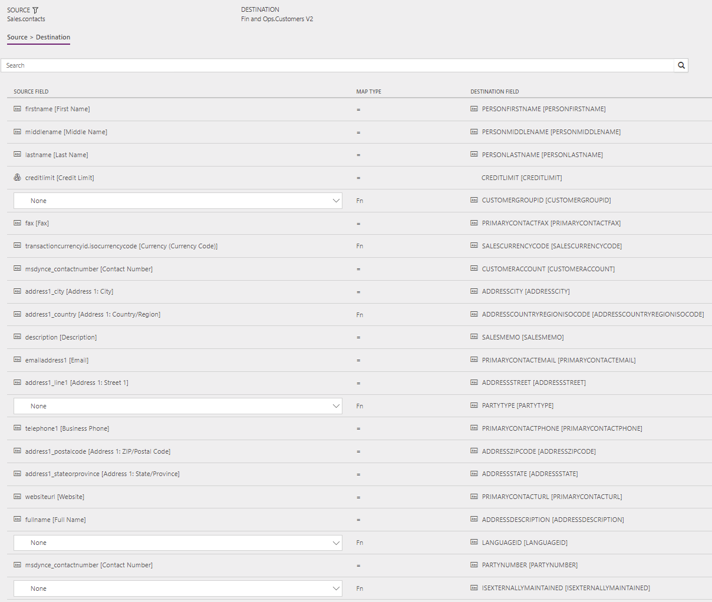

Kontakte direkt von Sales mit Kontakten oder Debitoren in Supply Chain Management synchronisieren
Important
Dynamics 365 for Finance and Operations hat sich zu speziell entwickelten Anwendungen entwickelt, mit denen Sie bestimmte Geschäftsfunktionen verwalten können. Weitere Informationen zu diesen Änderungen finden Sie im Dynamics 365-Lizenzierungshandbuch.
Note
Damit Sie die Prospect to Cash-Lösung verwenden können, müssen Sie mit Integration von Daten in Common Data Service for Apps vertraut sein.
Dieses Thema beschreibt die Vorlagen und die zugrunde liegenden Aufgaben, die verwendet werden, um die Entitäten „Kontakt (Kontakte)“ und „Kontakt (Debitoren)“ direkt aus Dynamics 365 Sales mit Dynamics 365 Supply Chain Management zu synchronisieren.
Datenfluss in Interessent nach Bargeld
Die Lösung Interessent nach Bargeld verwendet die Datenenintegrationsfunktion, um Daten über Instanzen von Supply Chain Management und Sales hinweg zu synchronisieren. Die „Interessent zu Bargeld”-Vorlagen, die über die Datenintegrationsfunktion verfügbar sind, ermöglichen den Fluss von Konten, Kontakten, Produkten, Verkaufsangeboten, Aufträgen und Verkaufsrechnungen zwischen Supply Chain Management und Sales. Die folgende Abbildung zeigt, wie Daten zwischen Supply Chain Management und Sales synchronisiert werden.

Vorlagen und Aufgaben
Um auf die verfügbaren Vorlagen zuzugreifen, öffnen Sie PowerApps-Administrator-Center. Wählen Sie Projekte, und dann auf, in der oberen rechten Ecke, wählen Sie Neues Projekt, um öffentliche Vorlagen auszuwählen.
Die folgenden Vorlagen und grundlegenden Aufgaben werden für die Synchronisierung von Kontakt (Kontakte) aus Sales für Kontakt (Kunden) in Supply Chain Management verwendet:
Namen der Vorlagen in der Datenintegration
- Kontakte (Sales zu Supply Chain Management) – Direkt
- Kontakte zu Kunden (Sales zu Supply Chain Management) – Direkt
Namen der Aufgaben im Datenintegrationsprojekt
- Kontakte
- ContactToCustomer
Vor der Kontaktsynchronisierung kann die folgende Kontaktsynchronisierung auftreten: Konten (Sales in Supply Chain Management)
Entitätssätze
| Verk. | Lieferkettenverwaltung |
|---|---|
| Kontakte | CDS-Kontakte |
| Kontakte | Debitoren V2 |
Entitätsfluss
Kontakte werden in Sales verwaltet und mit Supply Chain Management synchronisiert.
Ein Kontakt in Sales kann zu einem Kontakt oder Kunden in Supply Chain Management werden. Um festzustellen, ob ein Kontakt in Sales mit Supply Chain Management als Kontakt oder Debitor synchronisiert werden soll, berücksichtigt das System die folgenden Eigenschaften für den Kontakt in Sales:
- Synchronisierung mit einem Kunden in Supply Chain Management: Kontakte, wobei Ist aktiver Kunde auf Ja gesetzt ist
- Synchronisierung mit einem Kontakt in Supply Chain Management: Kontakte, wobei Ist aktiver Kunde auf Nein gesetzt ist und Unternehmen (Übergeordnetes Konto/übergeordneter Kontakt) auf ein Konto (nicht auf einen Kontakt) verweist
Prospect to Cash-Lösung für Sales
Dem Kontakt wurde ein neues Ist aktiver Kunde-Feld hinzugefügt. Das Feld wird genutzt, um Kontakte mit Vertriebsaktivität von Kontakten ohne Vertriebsaktivität zu unterscheiden. Ist aktiver Kunde wird nur für Kontakte auf Ja gesetzt, für die es Angebote, Bestellungen oder Rechnungen gibt. Nur diese Kontakte werden in Supply Chain Management als Kunden synchronisiert.
Dem Kontakt wurde ein neues IsCompanyAnAccount-Feld hinzugefügt. Dieses Feld wird verwendet, um anzuzeigen, ob ein Kontakt mit einem Unternehmen (übergeordnetes Konto/übergeordneter Kontakt) des Konto-Typs verknüpft ist. Diese Information wird verwendet, um Kontakte zu identifizieren, die mit Supply Chain Management als Kontakte synchronisiert werden sollen.
Dem Kontakt wurde ein neues Kontaktnummer-Feld hinzugefügt, um sicherzustellen, dass ein natürlicher und eindeutiger Schlüssel für die Integration bereitsteht. Wenn ein neuer Kontakt angelegt wird, wird automatisch ein Kontaktnummer-Wert unter Verwendung einer fortlaufenden Nummerierung erstellt. Der Wert besteht aus CON, gefolgt von einer aufsteigenden fortlaufenden Nummerierung und einem Suffix aus sechs Zeichen. Beispiel: CON-01000-BVRCPS
Wenn Sales die Integrationslösung für Sales angewendet wird, füllt ein Upgrade-Skript das Feld Kontaktnummer für vorhandene Kontakte unter Verwendung der oben genannten fortlaufenden Nummerierung aus. Außerdem setzt das Upgrade-Skript das Feld Ist aktiver Kunde für alle Kontakte mit Vertriebsaktivität auf Ja.
In Supply Chain Management
Kontakte werden mit der Eigenschaft IsContactPersonExternallyMaintained gekennzeichnet. Diese Eigenschaft zeigt an, das ein Kontakt extern verwaltet wird. In diesem Fall werden extern verwaltete Kontakte in Sales verwaltet.
Voraussetzungen und Einrichtung der Zuordnung
Kontakt zu Kunde
CustomerGroup ist in Supply Chain Management erforderlich. Um Synchronisierungsfehler zu vermeiden, können Sie in der Zuordnung einen Standardwert vorgeben. Der Standardwert wird verwendet, wenn das Feld in Sales leer geblieben ist.
Der Standardvorlagenwert ist 10.
Durch Hinzufügen der folgenden Zuordnungen können Sie die Anzahl der erforderlichen manuellen Updates in Supply Chain Management reduzieren. Sie können einen Standardwert oder eine Wertzuordnung beispielsweise aus Land/Region oder Stadt verwenden.
SiteId – Für Produkte in Supply Chain Management kann auch ein Standardstandort definiert werden. Ein Standort ist erforderlich, um in Supply Chain Management Angebote und Aufträge zu erstellen.
Für SiteId ist kein Vorlagenwert definiert.
WarehouseId – Für Produkte in Supply Chain Management kann auch ein Standardlagerort definiert werden. Ein Lagerort ist erforderlich, um in Supply Chain Management Angebote und Aufträge zu erstellen.
Für WarehouseId ist kein Vorlagenwert definiert.
LanguageId – Eine Sprache ist erforderlich, um in Supply Chain Management Angebote und Aufträge zu erstellen.
Der Standardvorlagewert lautet en-us.
Vorlagenzuordnung in Datenintegration
Die folgenden Abbildungen zeigen ein Beispiel für eine Vorlagenzuordnung in Datenintegration.
Note
Die Zuordnung zeigt, welche Feldinformationen von Sales zu Supply Chain Management synchronisiert werden.
Kontakt zu Kontakt

Kontakt zu Kunde

Verwandte Themen
Konten direkt von Sales mit Konten in Supply Chain Management synchronisieren
Produkte direkt von Supply Chain Management mit Produkten in Sales synchronisieren
Synchronisieren von Aufträgen direkt zwischen Sales und Supply Chain Management
Rechnungskopfzeilen und ‑positionen direkt von Supply Chain Management zu Sales synchronisieren